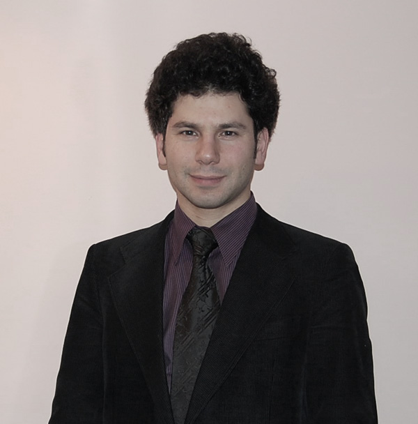

Yrd. Doç. Dr. Özgüç Güven
Kant, Bolzano ve Frege’de Yargı Sorunu
vkamer tarafından Paz, 04/11/2012 - 15:33 tarihinde gönderildi.11/12/2012 - 14:00
11/12/2012 - 15:30
»
- Yorum göndermek için giriş yapın
- 1067 okuma
- Takvim
Kategorilerin Transendental Çıkarımının A ve B Baskılarına Göre Karşılaştırılması
Özgür Yılmaz tarafından Pzt, 07/01/2008 - 13:49 tarihinde gönderildi.29/01/2008 - 14:30
29/01/2008 - 16:30
»
- Yorum göndermek için giriş yapın
- 2031 okuma
- Takvim
"Almanya'da Felsefe Çalışmaları..."
Özgür Yılmaz tarafından Pzt, 12/11/2007 - 15:22 tarihinde gönderildi.
Bölüm içi seminer faaliyetleri kapsamında Arş. Gör. Özgüç Güven tarafından 13 Kasın 2007 salı günü saat 14:30'da Felsefe Bölümü Seminer Kitaplığı'nda "Almanya'da Felsefe Çalışmaları Üzerine Gözlemler" başlıklı bir konuşma yapılacaktır.
»
- Yorum göndermek için giriş yapın
- 2239 okuma
Kant'ın Matematik Felsefesi
Özgüç Güven tarafından Salı, 10/04/2007 - 13:58 tarihinde gönderildi.10/04/2007 - 13:30
10/04/2007 - 14:30
İstanbul Üniversitesi Felsefe Bölümü Seminer Kitaplı'ğında 24 Nisan Salı Günü saat 13:30'da, Arş. Gör. Özgüç Güven "Kant'ın Matematik Felsefesi" adlı bir seminer verecektir.
»
- Yorum göndermek için giriş yapın
- 3253 okuma
- Takvim
Yrd. Doç. Dr. Özgüç Güven

İletişim
Oda: 202
Telefon: 212-4555700 / 15805
E-posta: ozguc@istanbul.edu.tr, ozgucguven@gmail.com
»
- Yorum göndermek için giriş yapın
- Devamını oku
- 15692 okuma
2013-2014 Ders Programı
G: I. Öğretim | II. Öğretim
Lisansüstü | Bilimsel Hazırlık
B: I. Öğretim | II. Öğretim
Lisansüstü | Bilimsel Hazırlık
2012-2013 Ders Programı
G: I. Öğretim | II. Öğretim
B: I. Öğretim | II. Öğretim
Lisansüstü | Bilimsel Hazırlık
2011-2012 Ders Programı
G: I. Öğretim | II. Öğretim
Lisansüstü | Bilimsel Hazırlık
B: I. Öğretim | II. Öğretim
Lisansüstü | Bilimsel Hazırlık
Danışmanlar: node/377